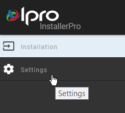
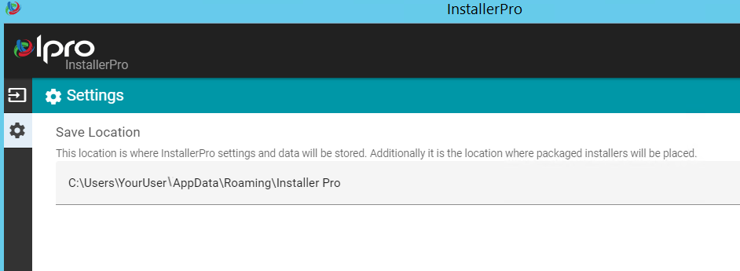

The Installation / Product Selection page opens by default. Open the Settings page by hovering over the gear icon in the left navigation panel.
The left pane expands to show the Installation and Settings tabs. Click Settings.

The Save Location field displays the default path where InstallerPro settings and data will be stored, and where packaged installers will be placed.

To change the path from the default location, click Browse and navigate to the new location you would like to use instead. When you have selected the appropriate location, click Select Folder to populate the field with the new path.
If you have changed the path from the default location, select Save in the bottom-right corner to save the new location. If, prior to saving, you wish to revert the new path back to the original, click Revert in the bottom-left corner.
|
|
Note: Once you have saved a new path, you will not be able to revert back to the default location by means of the Revert button. To use the default path as your Save Location, you will need to manually browse out to it.
If you have logged in already before changing the Save Location, you will have to re-open the app to see new Save Location config values shown. |